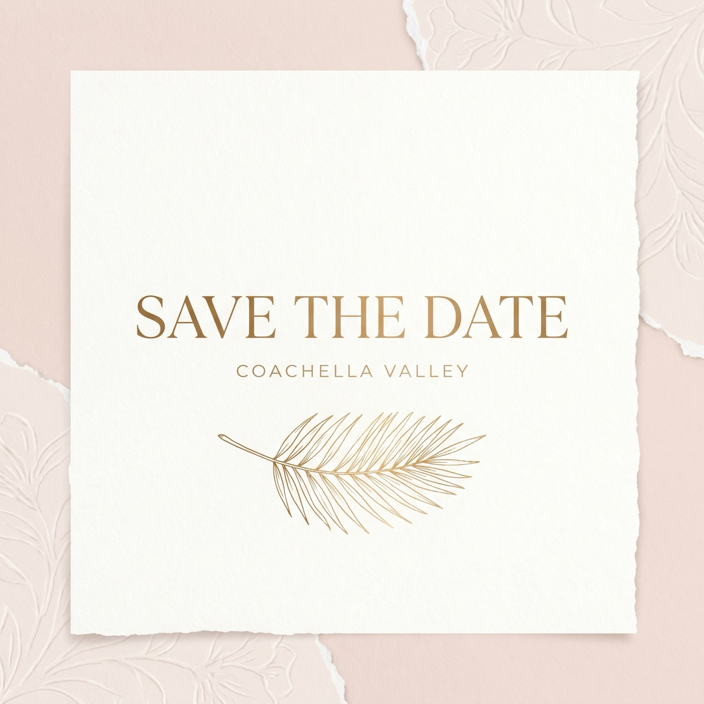
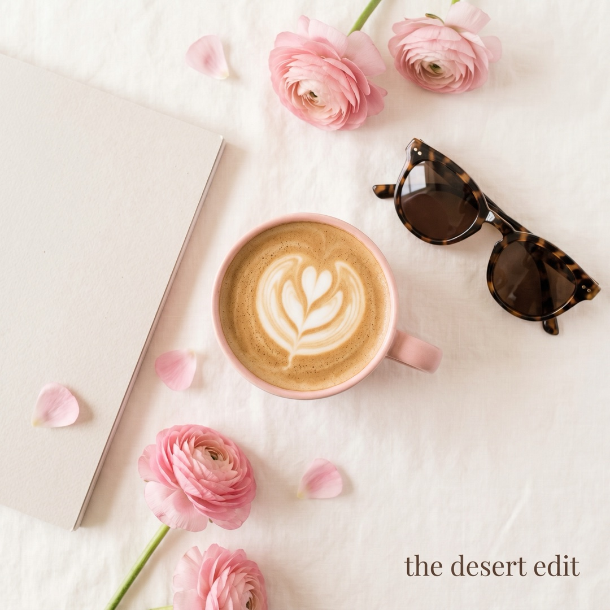

01
Event Production
Concept to load-out — run-of-show, vendors, guest experience, and the details that make a room feel effortless.
02
Brand Marketing
Campaigns, lifecycle, and partnerships — built around a clear message and a reason to care.
03
Social Media
Content strategy, calendars, and community — turning followers into an audience that shows up.
04
Copy & Editorial
Newsroom-trained writing — press releases, programs, and brand voice that reads clean.
05
Photography
A documentary eye for events, venues, and brand imagery that actually gets used.
06
Broadcast & Audio
Station-manager roots — segments, scripts, and on-air production from the KCOD years.
07
Arts & Venue Marketing
From a professional theatre company to an arena — selling seats and building loyal crowds.
08
Community Building
Volunteer programs and partnerships that root a brand in its valley.
Representative concepts — the kind of on-brand event, editorial & social content Alex builds for a brand’s feed.

